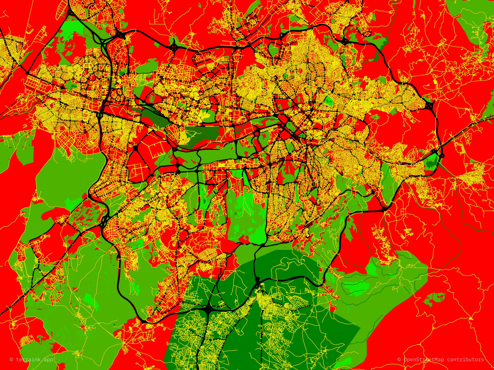
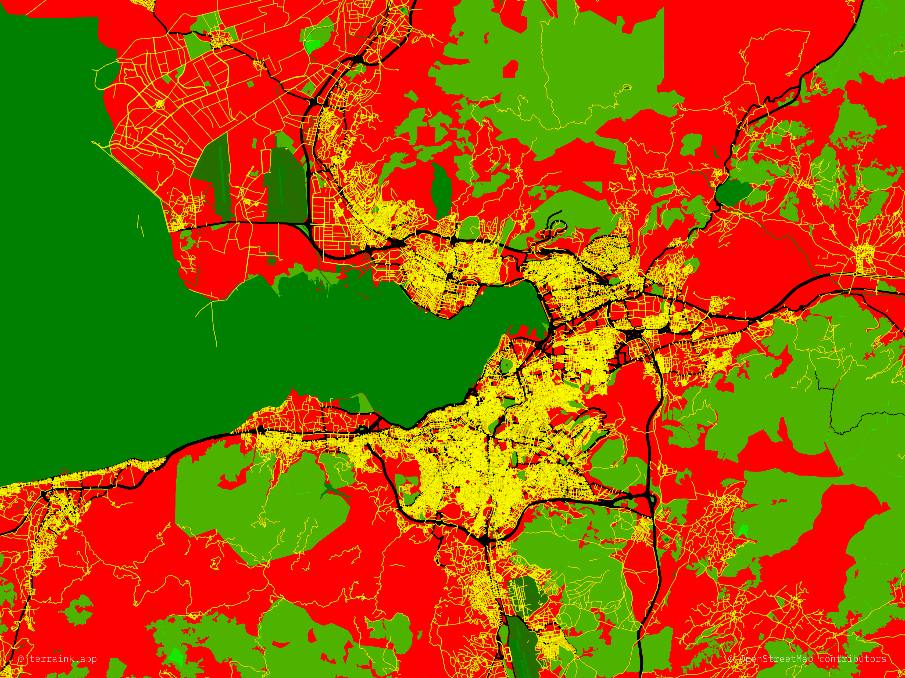

| Lejant | |
| AAGB 1. Sınıf Tehlike | Burada hiçbir korunma vesaire yok. Gökdelen dikmek isterlerse dikerler. |
| AAGB 2. Sınıf Tehlike (Caddeler) | Bir yerde ne kadar sarı yani ne kadar cadde varsa gökdelen dikilme ihtimali o kadar düşer çünkü bu orada o kadar küçük evlerden oluşan düzenli mahalle olma ihtimalini artırır. Daha alt sınıf bir bölgenin içindeki 2. sınıf eksklavlar görmezden gelinir ve hangi sınıfın içindeyse ora olarak algılanır. |
| AAGB 3. Sınıf Tehlike | Buralar orman, park, vesairedir. Müteahhitler çoğunlukla gökdelen dikmeye kıyamazlar ya da bazı 3. sınıf alanlar mesela ODTÜ ormanı korunduğu için gökdelen dikemezler. Ama bazı 3. sınıf bölgelerde yine de gökdelen vardır. |
| AAGB 4. Sınıf Tehlike | Buralar net korunuyor ve gökdelen dikemezler. |
| AAGB 5. Sınıf Tehlike (Korunan alan ve su kütleleri) | Buraların 4. sınıftan farkı yok ama koruyan makam ve korunan alan genelde daha büyük ve önemlidir, olmayan gökdelen dikilme ihtimalini iyice azaltır. Aynı zamanda su kütlelerine genellikle gökdelen dikilemez, dikmeye çalışılırsa da yasal kıstlamalar vardır. |
| Devlet Yolları | Devlet yolları gökdelen dikilemez ama gökdelenleri çeker. Mesela Esenboğa Havalimanı'na giden yol gökdelen doldu. |
UYARI: Bu haritalar hata içerebilir. Örneğin korunan Tarihî Yarımada'yı gökdelen tehlikesi yüksek ve gökdelen cehennemi Güney Dikmen Vadisi'ni büyük ihtimalle gökdelen yapılmaz diye göstermektedir. Aynı zamanda manyalar, askerî birlikler ve Kültür Varlıklarını Koruma Bölge Kurulu Arkeolojik Sit Alanları gibi gökdelensizleştirilmiş bölgeler haritada ne yazık ki bulummamaktadır.

Ankara Gökdelensizlik Haritası

Konstantinopol Gökdelensizlik Haritası

Smirna Gökdelensizlik Haritası